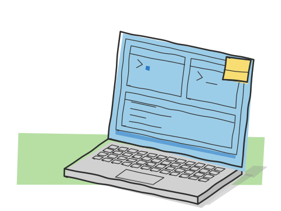
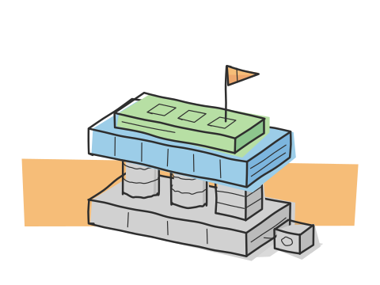

d's labs
browser lab environments, served from a server at home.

d's labs gives you a linux desktop, a security target or a data-engineering stack in a browser tab, isolated from everyone else's. i build it and i run it. anyone can sign up.
what you can do in it
- labs
- 40 one-click environments: kali, ubuntu desktop and terminal, jenkins, gitlab, gitea, airflow, kafka, nifi, keycloak, minio, n8n, grafana, prometheus, jupyter, juice shop, dvwa, webgoat, metasploitable and more. or build your own stack from a palette; it becomes one compose project.
- skills
- guided, timed courses in disposable containers. a "check my progress" engine verifies the work inside the container, not a quiz about it. 9 tracks and 6 timed challenges.
- ctf
- timed events with flags, dynamic scoring, first-blood bonuses, hints, teams and a scoreboard.
- ranges
- multi-machine attack scenarios on networks with no internet: a dmz host, an internal app and database, and a samba active directory domain controller. the internal segment is only reachable through the dmz host, so the pivot is real.
also there: an ssh gateway for terminal labs, managed mysql, postgresql, mongodb, cockroachdb, redis and rabbitmq, an optional ai mentor that reads and proposes but never changes anything, and an mcp server with 50 tools so claude, cursor or vs code can drive the platform.
start a pretend lab
press the button and step through what happens when you start a lab. the steps are the real ones; the log lines are written for this page, not copied from production.
request accepted
the api checks your session and your limits, records the lab as starting, and returns
202 acceptedstraight away. nothing slow happens inside the request.POST /labs/kali/start → 202 accepted (job queued)
job queued
the start becomes a job on a redis queue. a separate worker process picks it up. your browser starts polling for readiness.
worker picked up start_lab user=7f3a lab=kali
lab host woken
the machine that runs student containers is a separate virtual machine, and it's only switched on while someone has a lab running. if it's asleep, the worker wakes it first.
labhost power on requested → docker daemon reachable
private network created
every user gets their own docker network. your containers can see each other and nobody else's.
network private bridge for user 7f3a created
container started
the lab image starts on your network, capped at 2 cpu and 4 gb of memory, with your volume attached so your files outlive the container.
container kali started cpus=2 memory=4g volume attached
login gate ready
the lab gets a random address with a login in front of it. the poll comes back ready and the tab opens. the username and password are on your lab's page.
GET /labs/kali/ready → 200 ready (login gate up)
how it's built

- browser
- talks to the frontend over rest and a websocket.
- frontend
- react 19 · typescript · vite.
- api
- fastapi, fully async. auth · labs · skills · ctf · ranges · services · mcp.
- mongodb
- accounts, progress.
- redis
- cache, locks, pub/sub, and the job queue the worker reads.
- docker
- labs, services, skills, ranges.
- worker
- provisioning · snapshots · cleanup · nightly backup.
- ssh gateway
- one port, docker exec.
- admin console
- a separate server, not shown.
stack: fastapi, react 19, typescript, mongodb, redis, an arq worker, traefik and docker.
decisions i'd defend
- the admin console is a different server
- accounts, groups and sessions are managed from a separate console with its own operators. the public api has no admin endpoints at all, so breaking into it gives you no administrative power.
- slow work never blocks a request
- starting a lab, taking a snapshot and cleaning up all run in the worker. the api answers
202at once and the frontend polls. if a worker crashes mid-job, a reconciler expires the abandoned claim. - no lab runs sshd
- the ssh gateway is the only ssh implementation. it
docker execs into your lab as your own account, never as root. one authentication boundary instead of one per image. - the frontend trusts no storage
- the access token lives in memory only. refresh goes through an httponly cookie, with one refresh in flight at a time. nothing sensitive sits in localstorage.
- labs and skills are separate systems
- a skill is disposable and is purged when its timer ends. a lab lives until you stop it. different collections, different cleanup paths, so one can't eat the other's data.
it runs on a server at home
there's no cloud account behind d's labs. it runs on one machine in my family's home, two thousand kilometres from where i study. the public front door is always on. the lab host only wakes when someone needs it. when the power goes, the site says so and comes back by itself.
plans
there's a free plan and paid plans. the current ones are on d's labs itself; i'd rather not copy prices here and let them go stale.